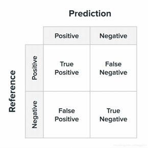
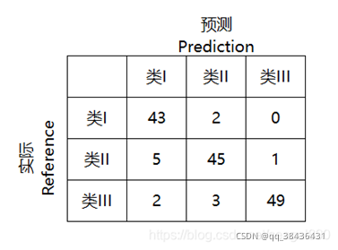

混淆矩阵及指标
混淆矩阵及深度学习中的一些评价指标
1.混淆矩阵
混淆矩阵的每一列代表了预测类别，每一列的总数表示预测为该类别的数据的数目；每一行代表了数据的真实归属类别，每一行的数据总数表示该类别的数据实例的数目；每一列中的数值表示真实数据被预测为该类的数目。

True Positive（TP）：真正类。样本的真实类别是正类，并且模型识别的结果也是正类。
False Negative（FN）：假负类。样本的真实类别是正类，但是模型将其识别为负类。
False Positive（FP）：假正类。样本的真实类别是负类，但是模型将其识别为正类。
True Negative（TN）：真负类。样本的真实类别是负类，并且模型将其识别为负类。
该矩阵可用于易于理解的二类分类问题，但通过向混淆矩阵添加更多行和列，可轻松应用于具有3个或更多类值的问题。
举例
如有150个样本数据，预测为类I，类II，类III 各为50个。分类结束后得到的混淆矩阵为：

2.评价指标
2.1 精确率（Accuracy）
精确率是最常用的分类性能指标。可以用来表示模型的精度，即模型识别正确的个数/样本的总个数。一般情况下，模型的精度越高，说明模型的效果越好。
Accuracy = (TP+TN)/(TP+FN+FP+TN)
2.2 正确率或者准确率（Precision）
又称为查准率，表示在模型识别为正类的样本中，真正为正类的样本所占的比例。一般情况下，查准率越高，说明模型的效果越好。
Precision = TP/(TP+FP)
2.3 召回率（Recall）
又称为查全率，召回率表现出在实际正样本中，分类器能预测出多少。
Recall（召回率） = Sensitivity（敏感指标，True Positive Rate，TPR）= 查全率
表示的是，模型正确识别出为正类的样本的数量占总的正类样本数量的比值。一般情况下，Recall越高，说明有更多的正类样本被模型预测正确，模型的效果越好。
Recall = TP/(TP+FN)
查准率和查全率是一对矛盾的指标。一般来说，查准率高时，查全率旺旺偏低；二查全率高时，查准率往往偏低。
2.4 精确率（Accuracy）和正确率（Precision）的区别
Accuracy，不管是哪个类别，只要预测正确，其数量都放在分子上，而分母是全部数据量，说明这个精确率是对全部数据的判断。
而正确率在分类中对应的是某个类别，分子是预测该类别正确的数量，分母是预测为该类别的全部的数量。
或者说，Accuracy是对分类器整体上的精确率的评价，而Precision是分类器预测为某一个类别的精确的评价。
2.5 Specificity（特异性）
特异性指标，表示的是模型识别为负类的样本的数量，占总的负类样本数量的比值。
负正类率（False Positive Rate, FPR），计算公式为：FPR=FP/(TN+FP)，计算的是模型错识别为正类的负类样本占所有负类样本的比例，一般越低越好。
Specificity = 1 - FPR